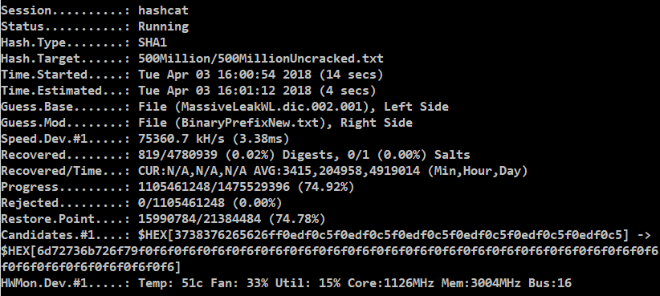

Kako sam napravio ovu stranicu
Ova stranica je napravljena u 3 programerska jezika JavaScript,C#,HTML.

Sto su DDOS napadi?
DDoS (Distributed Denial of Service) je napad u kojem napadač ili više njih pokušavaju učiniti određeni servis nedostupnim za ostale korisnike.
DDoS napad se može izvršiti na server, servise, uređaje, mrežu, aplikacije
pa čak i na određenu vrstu transakcija na Internetu u nekoj aplikaciji. U DDoS napadu zapravo napadač (ili napadači) ša
lje maliciozne podatke ili zahtjeve (request) prema određenoj meti

Neznam sto da napisem jos ovdje pa cu iz wikipedije stavit nesto.
Moj najdrazi predmet je matematika i informatika vjerovali ili ne.

Sto mislim sljedece godine nauciti?
Sljedece godine cu se krenuti baviti Kernel Driverima i QLearningom.

Sto su te dvije stvari?
I jedna i druga stvar se mogu koristiti za izradivanje umjetne inteligencije,no ja bih koristio to znanje za izradu algoritama.
Sto ja mislim o programiranju?
Ako nekoga stavrno to zanima neka se krene baviti time no nema brzog puta do dobrog progamera.Ja sam sjedio za vrijeme ljeta kodirao barem 8h svaki dan i uz to sam citao o assembly compilerima itd.
Nije bitno kako brzo ucis nego je bitno da nikad ne prestanes-Steve Jobs.